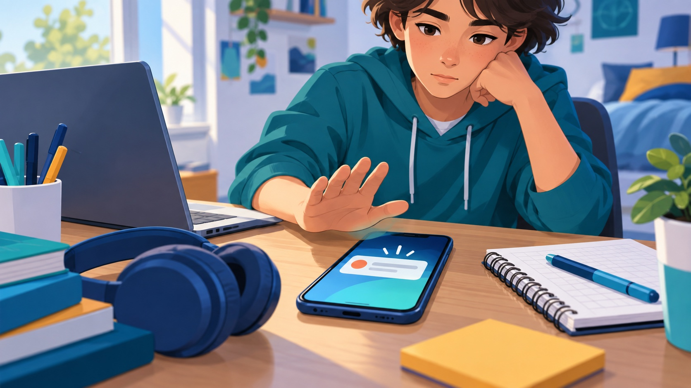

Sois el equipo de seguridad del centro
Vivís conectados: móvil, redes sociales, juegos, clase. Todo eso tiene una cara que no se ve, la ciberseguridad: proteger vuestros datos, vuestra identidad y vuestros dispositivos. En esta unidad os convertís en el equipo de seguridad del IES El Majuelo: vais a analizar riesgos reales y a preparar una campaña de concienciación para el resto del alumnado.
¿Qué vais a conseguir?
Al terminar seréis capaces de:
- Reconocer los riesgos más habituales en la red y por qué os afectan.
- Crear contraseñas robustas y proteger vuestra identidad digital.
- Identificar malware y fraudes como el phishing.
- Usar materiales (imágenes, música) respetando las licencias.
- Producir en pareja una campaña de concienciación y defenderla ante la clase.
El plan, sesión a sesión
| Sesión | De qué va |
|---|---|
| S1 | Qué es la ciberseguridad, tipos y por qué nos importa (casos reales). |
| S2 | Malware: virus, troyanos, ransomware… y cómo protegerse. |
| S3 | Contraseñas, doble factor, identidad y huella digital. Retos. |
| S4 | Riesgos en redes y plataformas + seguridad por hardware (firewall y HSM). |
| S5 | Propiedad intelectual y licencias: qué material puedo usar y cómo. |
| S6 | Presentación de la campaña y cuestionario individual. |
El producto final: una campaña
Campaña de concienciación (en pareja)
El trabajo grande de la unidad es una campaña (infografía, vídeo o decálogo) sobre uno de los riesgos que estudiéis, con consejos de protección bien fundamentados. La preparáis en pareja con Google Slides, Google Docs o Canva y la presentáis a la clase. Tenéis todos los detalles y un esqueleto para copiar en la página «Guía de la campaña».
Cómo se evalúa
Vuestra nota de la unidad sale de tres cosas:
- Tareas y retos de cada sesión (lo que vais entregando).
- La campaña en pareja (el producto final).
- Un cuestionario individual al final.
Cómo vas a entregar
Tu trabajo individual de cada sesión lo escribes en una plantilla de respuestas: en Google Classroom abrirás tu copia y allí irás rellenando las respuestas de la S1 a la S5 y pegando las capturas que se pidan. La campaña se hace en pareja y tiene su propia entrega. El cuestionario final es un formulario aparte. Todo funciona en el navegador, sin instalar nada ni crear cuentas nuevas.